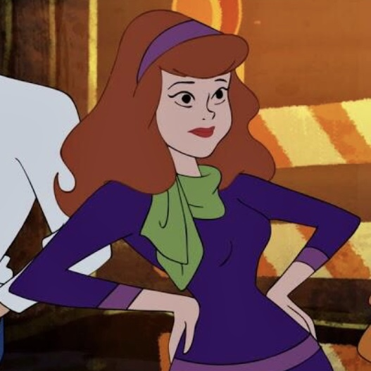

Since the original series “Scooby-Doo, Where Are You!” launched in 1969, the Scooby-Doo franchise has expanded into numerous television series and movies, with the latest series “Velma” premiering as of the time of writing, in March 2023.
The main premise of most series within the franchise revolves around the “Mystery Inc.” gang, comprising of the main characters Fred Jones, Daphne Blake, Velma Dinkley, Shaggy Rogers, and their talking Great Dane, Scooby-Doo. They travel around in their van, the Mystery Machine, to investigate spooky happenings and unmask the monsters behind them.
(introduce 5 heroes here)
|  |
The franchise has remained popular with audiences of all ages for over 50 years, and each of the five heroes have become some of the most popular characters in Western media. In particular, their strong friendships and ability to work as a team to solve mysteries and fight crime is at the heart and soul of its popularity.
While all viewers have their favourites, each hero has something unique to bring to the table, and it is the purpose of this data story to uncover the unique qualities of each hero.
introduction of dataset here
The dataset used here is Scooby-Doo Complete by @plummye on Kaggle. The creator spent about a year watching every Scooby-Doo iteration, to produce this dataset containing 603 records, each tracking 75 variables, from iterations aired over 53 years (from 1969 to 2021).
There are as many as 12 broad types of monsters appearing in the Scooby-Doo series and films. To be more specific and accurate in our analysis, we will focus only on the more common types of monsters.
From the donut chart, it is obvious that the Animal, Ghost, Mythical, Possessed Object, and Undead types are significantly more prominent than the rest. These will be the types of monsters focused on in the next segment.
Using a radar chart, we get a general picture of how each hero fares against the top 5 common monster types.
The values here are derived from (number of each monster the hero caught) minus (number of captures of the hero, by the monster). This number can be thought of as the generalized strength of the hero against the monster.
Here, we will analyse each hero's capabilities in a deeper way. Each horizontal bar chart will show the rate of the hero catching a type of monster, as well as the rate of the hero being captured by the monster.
The earlier radar chart gives us sort of a net strength a hero has against a type of monster. However, it fails to capture some intricacies that may be important.
(some text description)
(some text description)
(some text description)
(some text description)
(some text description)
Scooby will do anything for a Scooby Snack. These snacks are often used as an incentive by the four human heroes to convince Scooby-Doo to participate in dangerous or frightening schemes, such as acting as bait for a monster, helping to solve the mystery in the end.
Even though Daphne was one of the most incompetent in terms of catching the monster, as well as in terms avoiding being captured, she has actually offered the most Scooby Snacks, which were instrumental to eventually capture the monster.
(more analysis)
(present conclusions on the strengths and weaknesses of each hero (something like a pokemon card)
similar button as daphne
similar button as daphne
similar button as daphne
similar button as daphne